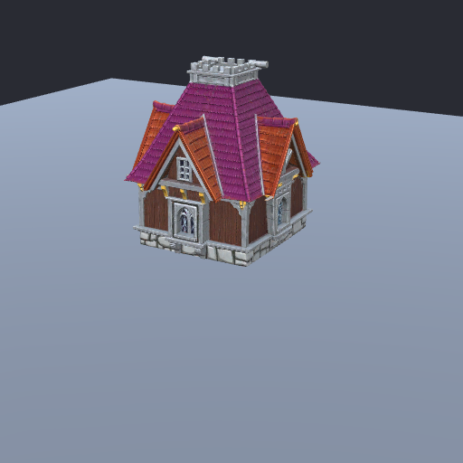
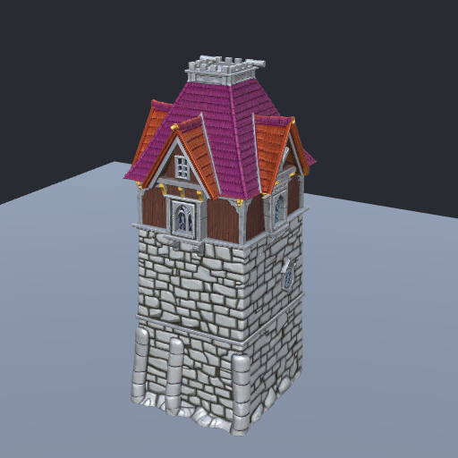
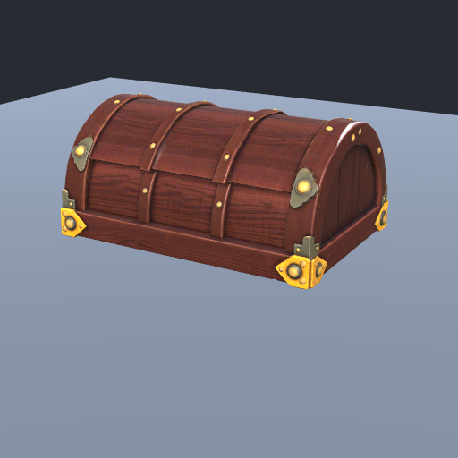
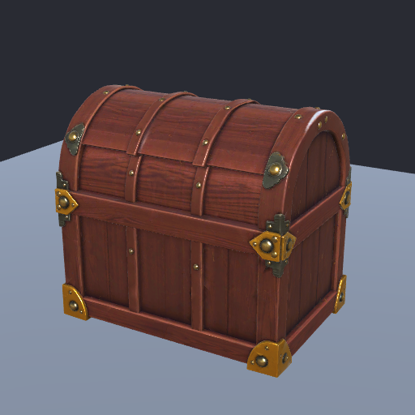
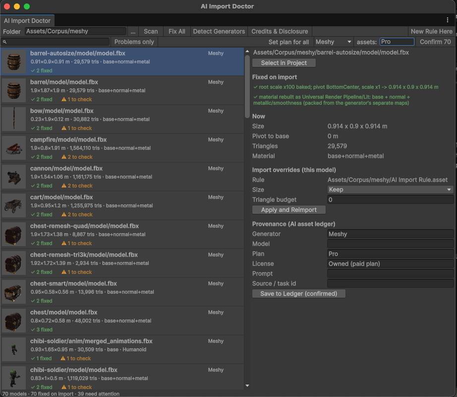

What it fixes
Measured on 36 Meshy models (70 FBX files, static and rigged) and on props from Unity AI's 3D Object Generator, in Unity 2022.3 LTS and Unity 6.
Scale and pivot
Bakes the ×100 root scale and axis rotations exports carry, puts the pivot on the ground and sets a real-world size per folder or per model, instead of the fixed size every model arrives at (1.9 m from Meshy, 1 m from Unity AI).
Materials
Rebuilds URP Lit (or Built-in Standard) materials with base, normal and a metallic/smoothness map packed from the generator's separate metal and roughness maps, and imports normal and data maps correctly.
Rigged characters
Sets up a valid Humanoid avatar and corrects the automatic bone mapping, drops rest-pose stub clips, gives clips readable names and loops locomotion. Scales characters to a real height.
Missing and wrong textures
Fixes models that arrive white: fills materials created before their textures were extracted (Unity AI), recovers textures rigged exports reference but don't ship (Meshy), and stops Unity from giving one character another character's texture.
Mobile budgets
Safe, UV-preserving polygon reduction (85–93% fewer triangles on the test set with no visible change) and LOD levels only where they help. Tells you when a lower budget needs a remesh.
Provenance and licenses
Records which generator, plan and license each asset came from, flags license traps, exports attribution credits and a store disclosure draft, and lists the AI assets each build actually ships.
Before and after




The editor window
One list of every model under your rules: what was fixed on import, what still needs a decision, and where each asset came from. Confirm the plan of a whole generator's assets in one click.

Details
- Unity 2022.3 LTS and Unity 6. Universal Render Pipeline and Built-in.
- Editor-only: nothing is added to your builds.
- Runs locally. No network access, no accounts, no analytics.
- Batch commands with JSON output for CI and coding agents.
- Never overwrites import data that belongs to other tools.